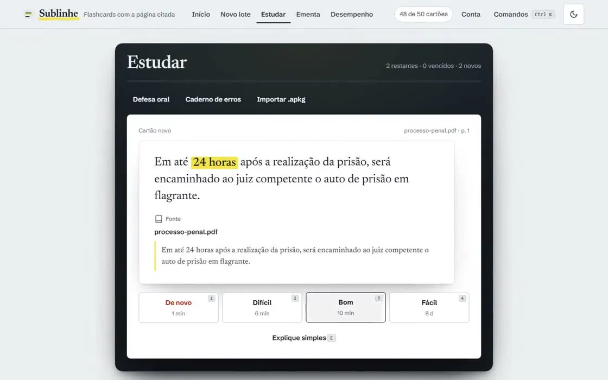
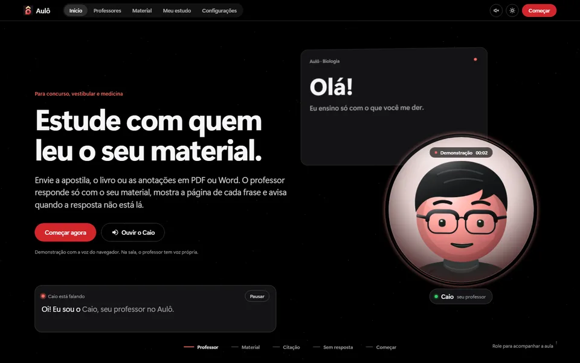
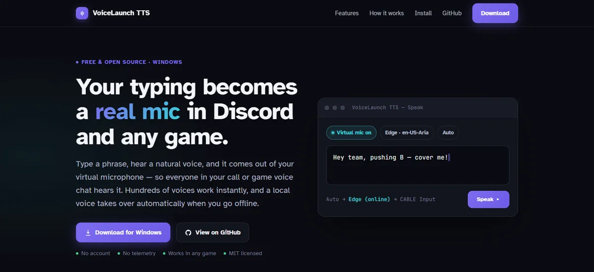
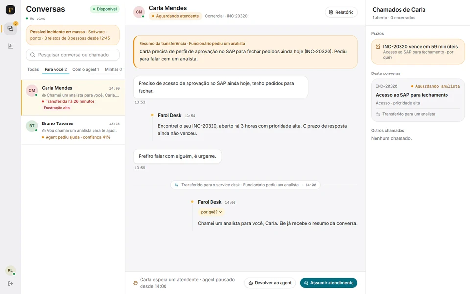

Desenho
Arquitetura, contratos e specs antes do código (OpenSpec, ADRs).
A-02.1 · o esquadro na planta
A-01Planta geral
Desenvolvedor de Soluções em IA
Desenho sistemas de IA e conduzo os agentes que escrevem o código. Meu trabalho é a arquitetura, os limites e as provas: testes, métricas e custo.
M-01 · público · PyPI
Diferença zero contra a fatura real da OpenRouter, em 6 chamadas reais.
M-07 · público · desafio técnico
573 testes unitários, 48 E2E e evals 35/36 (evals de 3 nov).
Lodemap · código aberto · MIT
72 de 72 módulos do axios no mapa, conferidos por um teste estrutural.
A-02Método
Vibe-coding com disciplina de engenharia. Eu desenho o sistema e fixo os limites, uma frota de agentes escreve o código e nada entra sem prova.
Arquitetura, contratos e specs antes do código (OpenSpec, ADRs).
A-02.1 · o esquadro na planta
Uma frota de agentes escreve o código em paralelo. Tenho um orquestrador próprio que roda Claude Code, Codex, Gemini e Cursor Agent como um runtime só.
A-02.2 · as quatro faixas laranja
Testes, release gates, evals e revisão de diff. Nada é “pronto” sem evidência.
A-02.3 · o portão que todo agente atravessa
Telemetria e custo por cliente em produção (é o que o LumenAI faz).
A-02.4 · ligado ao módulo M-01
A-03Projetos
Sete módulos na planta. Ao rolar, a frota de agentes ergue cada um; a altura do volume segue o log do número de commits.
Python · OpenTelemetry
Transforma traces de GenAI em custo por cliente, em dólar, exportando só metadados, nunca prompts.
Três processadores encadeados. Um span fica cobrado no tenant em que começou.
A 0.1.5 cobra a escrita de cache, marca como unpriced o evento que ficou sem preço, avisa quando um tenant chega a 80% e a 100% do orçamento (BudgetExporter) e ganhou testes com bibliotecas de instrumentação reais. A 0.1.6 guarda o orçamento no Redis: vários processos somam no mesmo total, que sobrevive a reinícios, e cada alerta dispara uma vez só.
Conferido contra uma conta real: em 6 chamadas reais de um assistente de voz meu (a base do Aulô) pela OpenRouter (gpt-4o-mini, com cache), o custo do LumenAI foi igual ao cobrado pela OpenRouter em cada chamada, US$ 0,00143115 no total, diferença zero. Ver a tabela ↗
tenant globex-legal · claude-sonnet-4-6 · 40.000→2.000 tokens · cache 30.000 · US$ 0,159BGE-M3 · FAISS · BM25 · FastAPI · React · iOS
RAG de corpus fechado feito para estudantes da saúde, a área de onde eu venho. Transforma material de aula e provas antigas em flashcards, questões e treino oral, sempre citando a página.
Quando o material não sustenta a resposta, ele se abstém.

repositório privado · case na entrevista
Governança para agentes de código no Claude Code: servidor MCP e hooks em Rust.
Inspeciona cada comando de shell antes de o agente rodar, deixa a lição do agente em quarentena até o dono aprovar e mostra só números que de fato mediu. Antes se chamava SynapseEngine.
N1 · protótipo pela régua do projeto, avaliada em 09/11/2026
A primeira camada aberta é o Lodemap: mapa vivo da arquitetura, com fluxos, histórico por versão e evidências para acompanhar mudanças.
Lodeward: repositório privado
Lodemap: código aberto · MIT
Painel local, só leitura, que mostra o que um agente de código está fazendo sem gastar tokens de modelo (polling com ETag/304).
Zero dependências de runtime. Widget MCP para Claude, Codex e Antigravity.
Estudo por voz · Python · JavaScript
Estude com quem leu o seu material. Para concurso, vestibular e medicina.
Você envia a apostila, o livro ou as anotações em PDF ou Word. Um professor virtual (Caio, Lia ou Íris, três jeitos de explicar) responde só com esse material, mostra a página de cada frase e avisa quando a resposta não está lá.

Em construção. Ainda sem lançamento e sem número de recall ou de latência publicado; o estudo de caso separa o que já está provado do que não está.
Repositório privado · em construção · mostro numa entrevista
TypeScript · Electron · React · Python FastAPI
Transforma digitação em um microfone de verdade para Discord e jogos.
Edge TTS online, com fallback automático para Kokoro/Piper locais quando a rede cai. O microfone virtual (VB-Cable) vem junto.

165 testes Vitest · E2E com Playwright · recursos de acessibilidade
Next.js 16 · Mastra · DeepSeek-V4-Flash (DeepInfra) · Drizzle + Turso · React 19 · Redux Toolkit
Agente de service desk de TI, feito para o desafio técnico de um processo seletivo. Cada resposta mostra o que ele entendeu, o que fez e por quê.
O funcionário conversa com o agente, que tenta resolver pela central de ajuda com busca híbrida e pergunta “Isso resolveu?”. Quando não resolve, ele monta o chamado para a pessoa confirmar, avisa se o prazo está em risco e percebe quando várias pessoas relatam o mesmo problema.
Do outro lado, o analista acompanha as conversas em tempo real (SSE), com o relatório da conversa, uma sugestão de resposta e os indicadores. O trace e a telemetria no console dizem qual modelo respondeu e por quê.
As regras do service desk (prioridade, prazo, confirmação, privacidade) ficam em código testado, e o código decide quais tools o modelo pode usar em cada passo. O modelo escolhido foi conferido depois num benchmark com 7 modelos, com custo real medido, e trocado de novo em 02/11 por medição: DeepSeek-V4-Flash, 35/36 nos evals da rodada de 3 nov, com teto de gasto por dia.

busca híbrida 84% → 94% · funcionário simulado pass^1 0,72 → 0,93 · imagem Docker de 486 MB, 25/25 na prova de fumaça · CI no CircleCI e CD com Komodo puxando do Docker Hub, rodando
Ver o estudo de caso →Usar a demo ↗Repositório ↗Ver o vídeo de demo →
A-04Atividade
GitHub · 26 out 2025 → 27 out 2026
Planta-chave · calendário real, 53 semanas × 7 dias
Na planta 3D, cada dia vira uma pilha de blocos (1 bloco = até 5 contribuições) que os agentes empilham. Passe o cursor sobre uma pilha para ver o dia.
A-05Trajetória
Comecei na medicina. Hoje me preparo para o mercado de tecnologia construindo sistemas de IA de ponta a ponta: os agentes escrevem o código e eu respondo pela arquitetura e pelas provas. A faculdade de tecnologia vem a seguir.
Medicina, a área de onde eu venho.
lumen-ai-core publicado no PyPI.
Assistente de voz com memória fechado para uso local; é a base do Aulô.
VoiceLaunch 1.3, primeiro release open source.
Lodeward começa (o repositório ainda se chama SynapseEngine).
Sublinhe, MVP fechado.
LumenAI SDK, revisão profunda: spans OpenInference cobrados, flush real, demo reproduzível e dashboard.
Assistente de voz, nova versão: respostas com fontes, grafo de conhecimento e orbe sempre visível.
Farol Desk (então Nexo Assist), agente de service desk de TI, entregue como desafio técnico.
Aulô, em construção: landing e frontend polidos, nos temas claro e escuro.
Faculdade de tecnologia e a primeira oportunidade no mercado.
A-06Contato
Brasil · aberto a vagas.